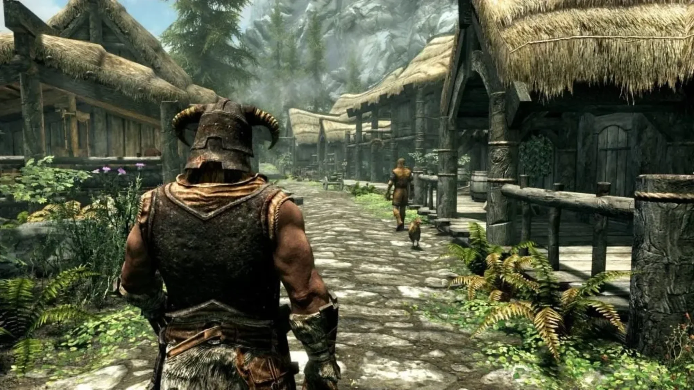
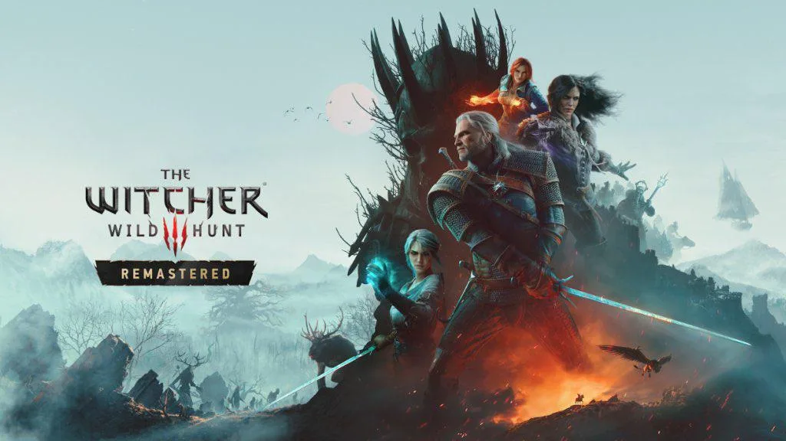
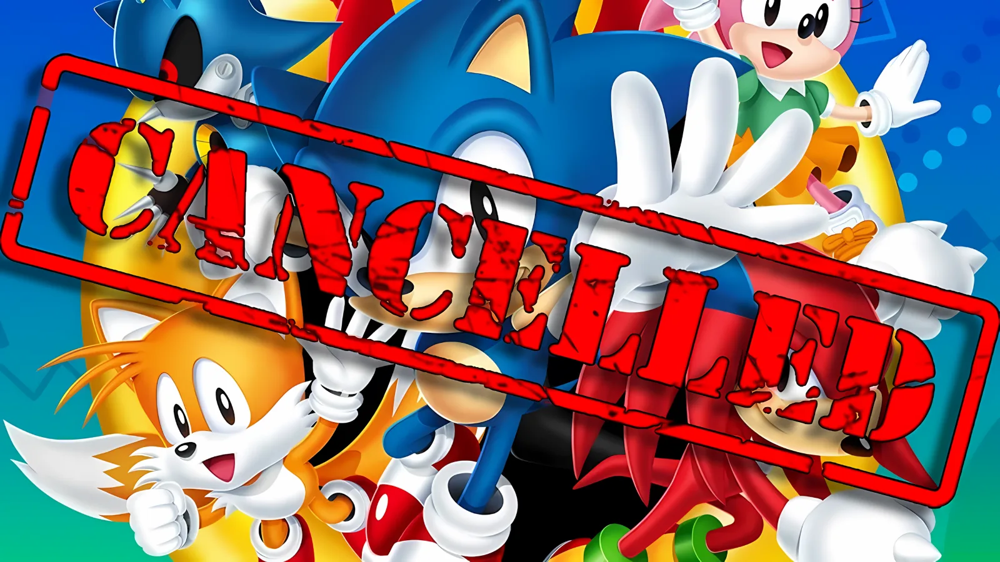
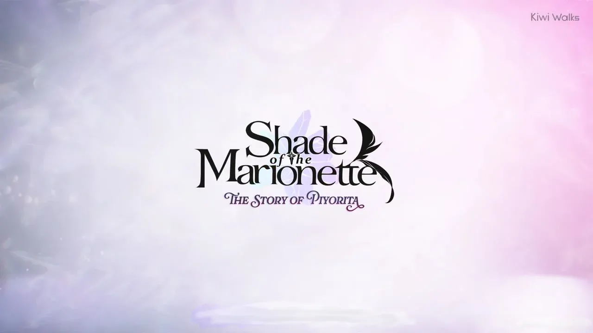
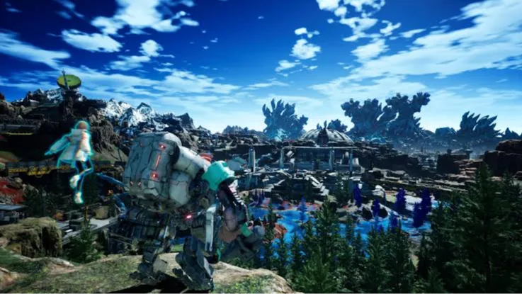
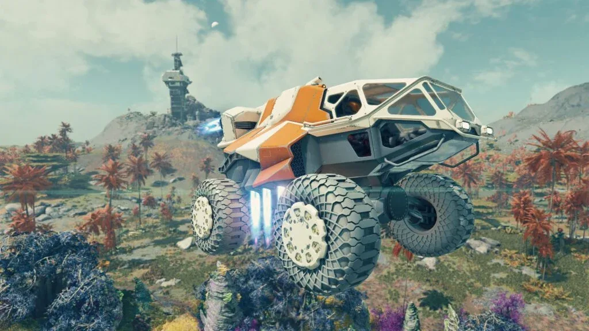
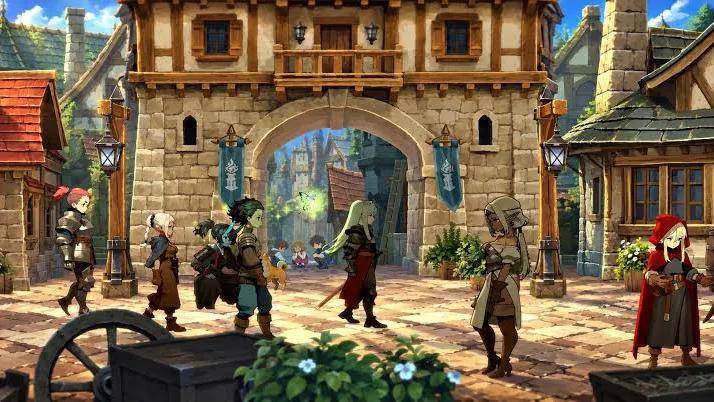

29 de septiembre de 2026The Elder Scrolls no tuvo un spin-off al estilo Fallout: New Vegas por la protección de Todd Howard, según un exdesarrollador
Kurt Kuhlmann, exdesarrollador de Bethesda y uno de los responsables de Skyrim, explicó por qué cree que la compañía nunca entregó The Elder Scrolls a otro estudio para desarrollar un RPG similar a Fallout: New Vegas. Según su interpretación, Todd Howard buscó evitar que surgiera una comparación entre estudios como ocurrió con Obsidian y Fallout.
28 de septiembre de 2026Sony patenta un mando de PlayStation que podría aceptar pagos contactless
Una patente presentada por Sony Interactive Entertainment describe un mando de PlayStation capaz de recibir información mediante tecnología NFC desde tarjetas, teléfonos y otros dispositivos. El documento contempla posibles usos para realizar compras, aunque no existe ningún anuncio de un nuevo mando que vaya a incorporar esta función.

28 de septiembre de 2026The Witcher 3 Remastered detalla sus horarios de lanzamiento y el tamaño de su actualización
CD Projekt Red detalló los horarios en los que estará disponible la gran actualización gratuita de The Witcher 3: Wild Hunt y confirmó el tamaño aproximado de los archivos que deberán descargar los jugadores. La actualización incorpora las mejoras de la versión remasterizada para Nintendo Switch 2 y otras plataformas.

27 de septiembre de 2026SEGA llegó a considerar cancelar Sonic, según el jefe de Sonic Team
Takashi Iizuka, responsable de Sonic Team, reveló que hubo momentos particularmente difíciles en los que dirigentes de SEGA llegaron a plantear la posibilidad de cancelar completamente la franquicia. Según el desarrollador, el éxito de la primera película de Sonic cambió el rumbo de la serie.

27 de septiembre de 2026Los creadores de WitchSpring presentan Shade of the Marionette, un nuevo RPG de acción 3D
KIWIWALKS, estudio responsable de WitchSpring, presentó Shade of the Marionette: The Story of Piyorita, un nuevo RPG de acción 3D ambientado en el universo de la franquicia. El juego llegará a PC y consolas durante 2027 y combinará combate, exploración, crafting y decisiones que modificarán determinadas escenas.
 27 de septiembre de 2026
27 de septiembre de 2026
Veteranos de Falcom quieren hacer los remakes de Trails from Zero y Trails to Azure antes de retirarse
Toshihiro Kondo, presidente de Nihon Falcom, reveló que algunos desarrolladores veteranos quieren regresar a los juegos de Crossbell antes de retirarse. La compañía estaría interesada en realizar remakes de Trails from Zero y Trails to Azure, aunque ninguno de los dos proyectos fue confirmado oficialmente.

27 de septiembre de 2026SYNDUALITY: Echo of Ada cerrará sus servidores pero continuará como juego offline
Bandai Namco anunció que el servicio online de SYNDUALITY: Echo of Ada finalizará en mayo de 2027. Sin embargo, el juego no desaparecerá: el equipo está trabajando en una versión independiente y offline que permitirá continuar jugando en solitario contra enemigos controlados por la IA.

25 de septiembre de 2026Starfield 2 podría no suceder: un exdesarrollador de Bethesda cree que el primer juego no tuvo suficiente éxito
Kurt Kuhlmann, exdiseñador principal de sistemas de Starfield, puso en duda que Bethesda llegue a desarrollar una secuela. Según su visión, el RPG espacial no habría alcanzado el nivel de éxito necesario para justificar una segunda entrega, aunque considera que un eventual Starfield 2 podría haber estado mucho más cerca de la visión original de Todd Howard.

25 de septiembre de 2026El director de Unicorn Overlord presenta DAWNGAZER, un nuevo RPG de acción que dará inicio a un universo de fantasía
Takafumi Noma, director de Unicorn Overlord, presentó su nuevo proyecto tras abandonar Vanillaware. DAWNGAZER será un RPG de acción desarrollado por su nuevo estudio IGNISPHERE y funcionará como el primer videojuego de un universo de fantasía que también se expandirá mediante novelas y merchandising.